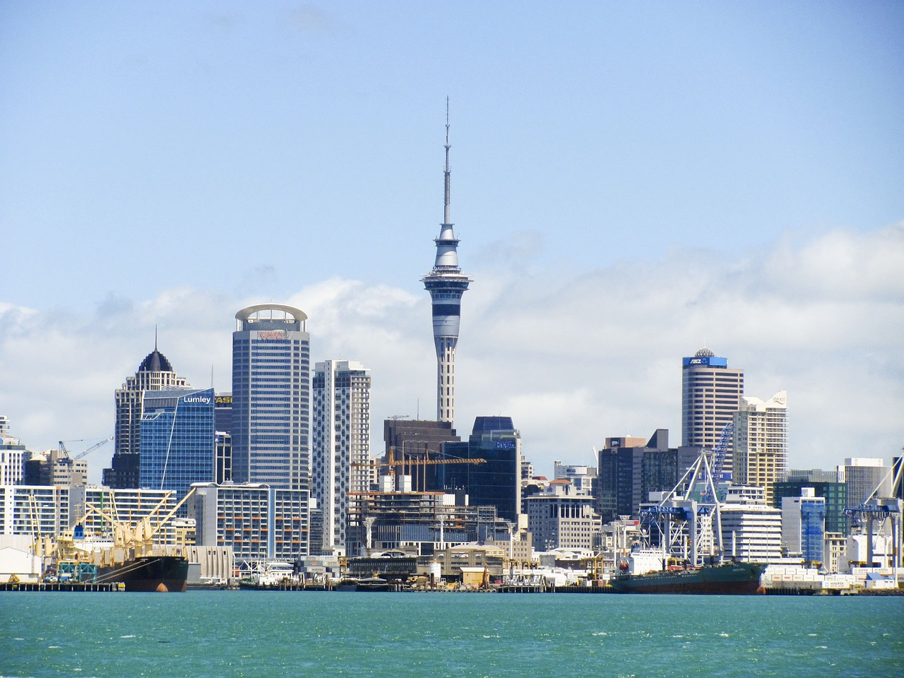

Neuseelandreise
Auckland
Auckland ist eine Großstadt und zugleich Unitary Authority auf der Nordinsel von Neuseeland.
Mit etwas mehr als 1,4 Millionen Einwohnern ist sie die größte Stadt Neuseelands, in
der etwa ein Drittel der neuseeländischen Bevölkerung lebt.

Geprägt wird Auckland durch die 53 inaktiven Vulkanen, zwischen welchen sich die Großstadt erstreckt.Die
Lage an geschützten Meeresbuchten trägt
ebenfalls wesentlich zum Bild Aucklands bei, nicht zuletzt durch die zahlreichen Segelboote, die der
Stadt den Beinamen City of Sails einbrachte.
(Quelle: Wikipedia )